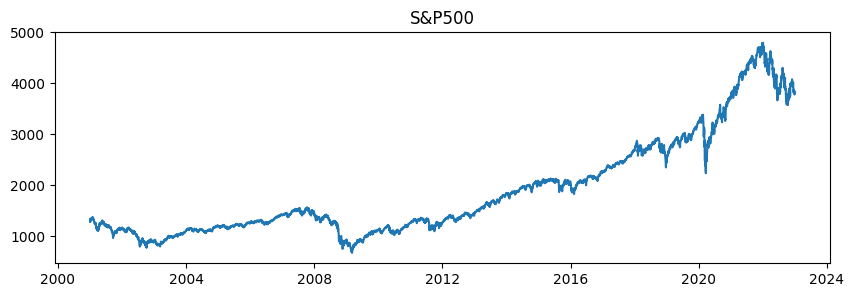

import pandas as pd
import numpy as np
import matplotlib.pyplot as plt
import yfinance as yf
import fracdiff # https://github.com/fracdiff/fracdiff를 사용분수 차분 (fractional differentiation)
Fractional Differentiation
fractional differentiation
data
stationarity
시계열의 메모리를 어느정도 보존하면서 정상성을 만족하도록 차분해주는 “분수 차분(fractional diffentiation)”에 대해 알아보자.
Fractional Differentiation
가격과 같은 비정상성의(non-stationary) 시계열 자료는 통계모형 등의 분석에 적합하지 않다. 따라서 보통 시계열 자료를 (정수 단위로; 1차, 2차 …) 차분하여 정상적(stationary) 상태로 만들어 분석에 사용한다.
시계열이 비정상성이라는 것은 그만큼 메모리(memory)를 보존하고 있다는 것이다. 따라서 과도하게 차분을 하여 시계열을 정상적으로 만들면 기존의 시계열 자료가 가지고 있는 정보는 사라지게 된다.
이를 방지하기 위한 방법이 분수 차분(fractional differentiation)이다. “fractional differentiation”은 M.DePrado의 저서 “Advances in Financial Machine Learning”에 소개된 방법으로 시계열의 메모리를 어느정도 보존하면서 정상성을 만족하도록 차분해주는 것을 의미한다.
방법
다음과 같은 Backshift 연산자 \(B\)가 있다고 하자
실수 행렬 \({Xt}\)에 대해
\(B^k X_t = X_{t−k}\) (\(k \geq 0\))
\((1-B)^{d} = \sum^{\infty}_{k=0}{\left( \begin{array}{c} n \\ r \end{array}\right)} (-B)^k\) (formal binomial series expansion)
\((1-B)^{d}X_t\): d차 차분 시계열 (d는 실수)
따라서 d차 차분에 대해 다음과 같이 시계열이 생성된다.
- \(\tilde{X}_t = \sum^{\infty}_{k=0}w_kX_{t-k}\)
- \(w = \{ 1, -d, \frac{d(d-1)}{2!}, -\frac{d(d-1)(d-2)}{3!}, \cdots, (-1)^k \prod_{i=1}^{k-1}(\frac{d-i}{k!}) , \cdots \}\)
하지만 실제로 차분을 구할 때 위와 같은 계산은 무한급수가 되므로 이를 처리해야 한다.
또한 위의 식에서의 계수(혹은 weight)를 \(w\)(예: \(0.2, 0.08 \cdots\))라고 했을 때, 정수가 아닌 \(d\)에 대해 \(k \geq d+1\)가 되면 \(\text{int}[d]\)가 짝수일 때 \(w\)가 음수가 된다.
즉, \(\text{int}[d]\)가 짝수일 때, \(\lim\limits_{k\to \infty} w_k = 0^-\)이고, \(\text{int}[d]\)가 홀수일 때, \(\lim\limits_{k\to \infty} w_k = 0^+\)이다.
따라서 \(w_k\)의 \(k\)에 대한 window를 정해주거나, 상대적 weight-loss (\(\frac{\sum_{j=T-1}^{T}|w_j|}{\sum_{i=0}^{T-1}|w_i|}\))에 대해 threshold를 설정하여 계산을 제한할 수 있다.
예를 들어 다음과 같이 생각할 수 있다.
- \((1-B)^{0.2} X_t = X_t - 0.2 X_{t-1} - 0.08 X_{t-2} - 0.048 X_{t-3} \cdots\)
- \((1-B)^{0.4} X_t = X_t - 0.4 X_{t-1} - 0.12 X_{t-2} - 0.064 X_{t-3} \cdots\)
- \((1-B)^{0.8} X_t = X_t - 0.8 X_{t-1} - 0.08 X_{t-2} - 0.032 X_{t-3} \cdots\)
- \((1-B)^{1} X_t = X_t - 1.0 X_{t-1} - 0 X_{t-2} - 0 X_{t-3} \cdots\)
예시
# S&P500 지수를 가져와본다
sp500 = yf.download('^GSPC', start='2001-1-1', end='2023-1-1').Close[*********************100%***********************] 1 of 1 completedsp500Date
2001-01-02 1283.270020
2001-01-03 1347.560059
2001-01-04 1333.339966
2001-01-05 1298.349976
2001-01-08 1295.859985
...
2022-12-23 3844.820068
2022-12-27 3829.250000
2022-12-28 3783.219971
2022-12-29 3849.280029
2022-12-30 3839.500000
Name: Close, Length: 5535, dtype: float64plt.figure(figsize=(10,3))
plt.title("S&P500")
plt.plot(sp500)
plt.show()
# fraction difference (n=1)은 np.diff()와 같다.
diff = sp500.diff()[1:]
f_diff_1 = fracdiff.fdiff(sp500, n=1)
np.all(diff == f_diff_1)Truediff = sp500.diff()
plt.figure(figsize=(10,3))
plt.title("S&P500 difference")
plt.plot(diff)
plt.show()
n_s=[.2,.4,.6,.8,1.]
w=10
plt.figure(figsize=(16,8))
plt.title(f"S&P500 nth fractional differences")
plt.plot(sp500)
for n in n_s:
diff = fracdiff.fdiff(sp500, n=n, window=w)[w:]
diff = pd.Series(diff,index=sp500.index[int(n)+w:])
plt.plot(diff)
plt.legend(['0 (original)']+n_s, title='nth')
plt.savefig("fdiff_thumbnail.jpg")
plt.show()참고문헌
- De Prado, M. L. (2018). Advances in financial machine learning. John Wiley & Sons.
- https://fracdiff.github.io/fracdiff/